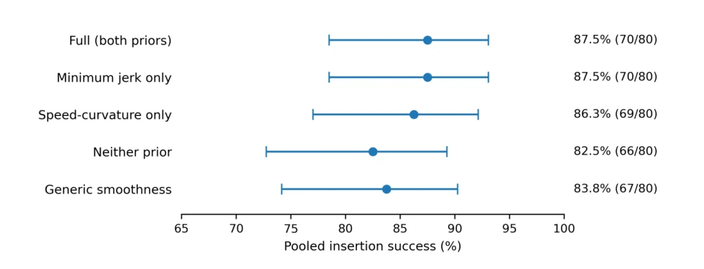

This paper acts like a calm forensic examiner, dissecting the efficacy of 'motion priors' in few-shot robotic insertion tasks. The core conclusion is somewhat counter-intuitive: with only 15 demonstrations, the complex 'velocity-curvature' regularization (mimicking the human 2/3 power law) not only failed to help but was completely defeated by the simple 'Minimum Jerk (Minimum Jerk)'. The authors are honest, not boasting about safety or robustness, only admitting this is a statistical description of task success rates. However, there are also many drawbacks: the experimental data is archived, specific weights and hyperparameters are not public, even the trial order was not recorded, how to reproduce this? Claiming 'data scarcity', actually it is just few samples, no proof of generalization. However, being able to clearly negate a popular hypothesis (direct transfer of biological motion laws) also counts as clearing a mine for the field.
Diffusion Policy [1] is powerful, but extremely data-dependent. In precision insertion tasks, perceptual uncertainty and contact dynamics make data efficiency a bottleneck. Existing work such as FoAR [2] focuses on force feedback, EquiBot [5] utilizes geometric equivariance, but neither solves the policy regularization problem with 'only 15 demonstrations'. Previous smoothing methods are mostly in inference post-processing [6] or frequency domain guidance [7], lacking explicit motion prior comparison during training. This paper aims to verify: when data is extremely scarce, can Minimum Jerk and velocity-curvature priors based on human kinematics serve as inductive biases to improve success rates? This directly relates to the feasibility of low-cost robot deployment.
Overall adopts the Diffusion Policy framework, inputting eye-in-hand RGB images, end-effector pose, wrist torque, and historical observations, predicting short-horizon action increments. Training objectives include diffusion loss, behavior cloning loss, and regularization terms. The innovation lies in introducing two motion priors into the training loss: 1) Minimum Jerk (Minimum Jerk), penalizing the third-order difference of predicted positions to suppress acceleration jumps; 2) Velocity-curvature regularization, coupling velocity and path geometry based on the 2/3 power law. Experiments designed five control groups: joint regularization, separate Jerk, separate curvature, no prior, general smoothing. By adjusting weights to balance regularization and imitation fidelity, and training under SE(3) transformation consistency constraints. Policy inference frequency 10-20Hz, low-level control executes interpolated targets, following impedance and hybrid force/position control principles. Parameters not retained are not reported, but architecture remains fixed.

Fig. 2. Pooled insertion success across the five regularization settings. Points show success rates; horizontal error bars show two-sided Wilson 95% confidence intervals. Labels give the rate and successful/total trials. Each setting pools 20 trials from each of Seen, Geometry, Pose, and Lighting. The horizontal axis spans 65–100% for readability. Full and jerk only overlap exactly (70/80 each); these marginal intervals are not confidence intervals for pairwise differences.
Using AUBO-i5 robotic arm, 15 teleoperation demonstrations, no simulation pre-training. Evaluation covers Seen, Geometry, Pose, Lighting four categories of conditions, each setting 80 real robot trials. Metrics are only binary success (stable insertion). Results show: Joint regularization and only Jerk settings tied for best (70/80), curvature separate setting slightly lower (69/80), no prior worst (66/80). Ablation shows Jerk contributed the main gain, curvature had no additional marginal gain. General smoothing effect was in between. Confidence intervals overlap, statistical significance is questionable. Conclusion supports Jerk as a simpler candidate, but did not prove mechanism or safety gains.